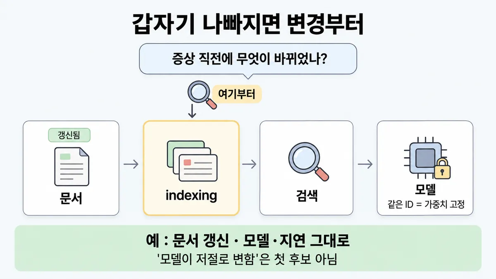
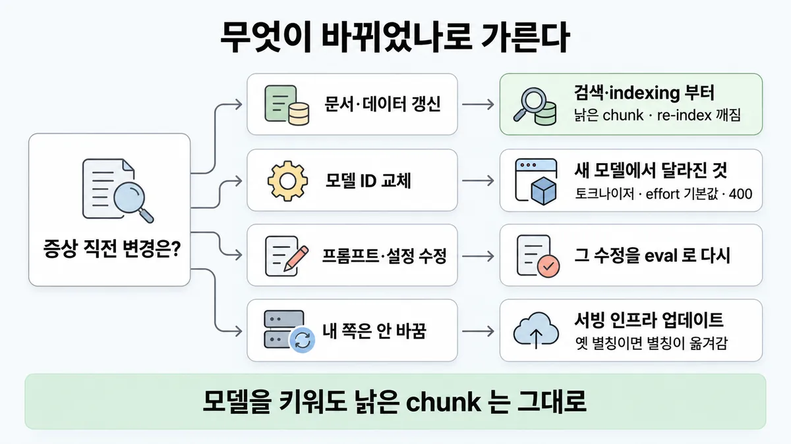
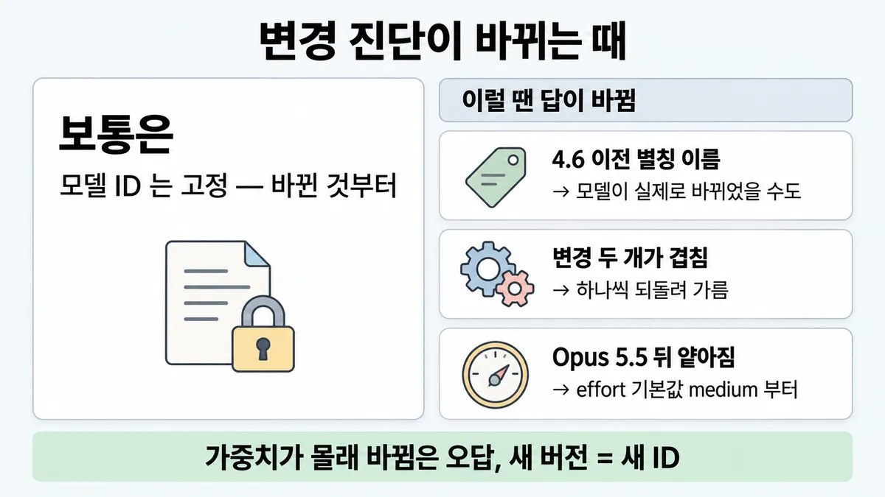

■ 변경부터 묻는 진단
표시가 없는 문장은 공식 문서에서 확인한 내용이에요. 다른 표시는 읽는 법
왜 배우나 — 시험이 요구하는 것
시험 목표 4.4 문제 진단 · D4 평가 16%Diagnose system issues (prompt failure, hallucinations, model mismatch)
이 개념으로 푸는 판단 (할 수 있어야 하는 것)
- 4.4① 문서 갱신 뒤 자신 있게 틀린다 — 모델·지연은 그대로 — 어느 계층부터 조사하나 (첫 질문 = 증상 직전에 무엇이 바뀌었나)
- 4.3③ 프롬프트 한 줄·모델 버전을 바꿨다 — 무엇을 다시 돌리나? — 반복 개선 루프 (변경 = 시스템 변경, eval 통과 뒤 배포)
- 6.5② 문서를 갱신한 뒤 확신에 찬 오답이 나온다 — "모델이 드리프트했다"? — 핸드오프 뒤 품질 저하의 원인 가리기 (고정 모델 ID vs 검색·색인·요구 변화)
한눈에
갑자기 나빠지면 첫 질문은 "증상 직전에 무엇이 바뀌었나" 다. 그 변경이 일으킬 수 있는 계층부터 조사한다. 그 변경으로는 안 생길 원인은 버린다 (가이드 샘플 3)
모델 ID 는 고정 스냅숏이다. 같은 ID 의 가중치·구성은 안 바뀐다. 새 버전은 새 ID 로 나온다. 그래서 "모델이 저절로 변함"은 첫 후보가 아니다
비유 배포 직후 장애는 변경 이력(change log)부터 본다. 데이터만 갱신했으면 같이 갱신되지 않은 인덱스를 의심한다. 인스턴스부터 키우지 않는다


ELI5
어제까지 잘 되던 장난감이 오늘 고장 났어요.
- 제일 먼저 물어요. "어제랑 뭐가 달라졌지?"
- 새 건전지를 넣었다면 건전지부터 봐요.
- 장난감 속 기계는 몰래 바뀌지 않아요. 바뀌면 이름이 새로 붙어요.
- 아무것도 안 바꿨는데 조금 달라졌다면, 가게에서 포장을 바꾼 걸 수 있어요.
개념 설명
원리
시스템은 층으로 나뉜다
- 층은 아래 순서로 이어진다. 그리고 이것을 재는 eval·grader(채점기)가 따로 있다.
- 문서·데이터
- indexing(색인)
- 검색(retrieval)
- 프롬프트
- 모델(ID)
- 서빙 인프라
- 변경 하나가 깨뜨릴 수 있는 층은 정해져 있다. 문서 갱신은 indexing·검색을 흔들 수 있다. 그러나 모델 가중치나 context window 를 바꾸지는 못한다.
- 그래서 "무엇이 바뀌었나"가 조사 순서를 정한다. 그 변경으로는 안 생길 원인은 먼저 버린다 (가이드 샘플 3 해설).
모델 ID 는 움직이지 않는 기준점이다
- 4.6 이후 날짜 없는 ID 는 스냅숏 그 자체다. 같은 ID 의 가중치·구성은 안 바뀐다. 새 버전은 새 ID 로 나온다.
- 그래서 "모델이 저절로 변했다"는 첫 후보가 아니다. 이 고정 덕분에 모델 층을 빼고 나머지를 볼 수 있다.
- 예외가 둘 있다.
- ⓐ 4.6 이전 별칭(
claude-sonnet-4-5등)은 최신 날짜 스냅숏을 가리키는 포인터다. 그래서 고정 보장 밖이다. - ⓑ 가중치는 고정이어도 서빙 인프라(라우터·안전 분류기·샘플링 로직)는 바뀔 수 있다. 이것이 사소한 동작 차이를 낼 수 있다.
- ⓐ 4.6 이전 별칭(
모델을 바꾼 경우에는 달라진 것 목록부터 본다
- 목록은 토크나이저 · effort 기본값 · 400 으로 막힌 기능(prefill · temperature)이다. 증상과 목록을 짝지으면 대부분 여기서 걸린다.
eval 도 바뀌는 층이다
- 점수가 떨어졌을 때 transcript 를 읽는다. 에이전트가 틀린 건지, grader 가 맞는 답을 떨어뜨린 건지 가려낸다.
규칙과 판단


갈림길
① 무엇이 바뀌었나 [4.4①]
검색·indexing 부터
관련 없거나 낡은 chunk 가 들어간다 (re-index(재색인) 깨짐 · 임베딩 불일치)
다음 물음 — 무엇이 달라졌나?
eval 다시
그 수정을 eval 로 다시 돌린다. 자세한 것은 ■ 변경마다 eval 다시 에 있다
다음 물음 — 모델 ID 가 어떤 형식인가?
② 모델을 바꿨으면 [4.4①] [4.3③]
토크나이저
4.7 이후 모델은 같은 글의 토큰이 약 30% 더 나온다
effort 기본값
Opus 5.5 의 기본값은 medium 이다. 그래서 effort 를 생략한 요청은 Opus 5 때보다 한 단계 낮게 실행된다 시험 뒤 변경
막힌 기능
4.6 이후(4.6 포함) 모델은 prefill 이 막힌다. Opus 4.6 뒤에 나온(4.6 제외) 모델은 temperature 1.0 외 값이 막힌다
③ 안 바꿨는데 달라질 때 [4.4①]
서빙 인프라
가중치는 고정이다. 그래서 사소한 동작 차이의 가장 유력한 원인은 서빙 인프라 업데이트다
claude-sonnet-4-5)
별칭이 옮겨갔다
별칭은 최신 날짜 스냅숏을 가리키는 포인터다. 고정 보장 밖이다
흐름
그림 속 이름·금액·시간·토큰 수는 예시예요. 공식 한도·동작은 카드 본문 값이 기준.
장면 글로 보기
칸 : 문서 → indexing → 검색 → 모델
규칙 (모델) : 같은 ID 의 가중치·구성은 안 바뀐다
질문 : 증상 직전에 무엇이 바뀌었지?
① 문서 갱신이면 indexing 부터 ✓
- 시작 : 문서 — 쪽지 : 환불규정 v3 / 기한 14일 → 30일
- 갱신 : 문서 → indexing : re-index 가 깨졌다 — 쪽지 : 새 v3 chunk : 0개 / 옛 v2 chunk : 그대로
- 찾기 : indexing → 검색 : 낡은 chunk 를 찾는다 — 쪽지 : top-1 : v2 §4 / "환불 기한 14일"
- 넣기 : 검색 → 모델 : 잘못된 문맥을 넣는다 — 쪽지 : 문맥 : v2 §4 "14일"
- 답 : 모델 : 자신 있게 틀린다 — 말 : “환불은 14일 안에 가능해요.”
- 진단 : indexing : 모델·지연이 그대로라 여기부터 본다 — 쪽지 : re-index 확인 / v3 chunk 누락
- 끝 : 모델·지연이 그대로면 검색·indexing 부터 본다
② 모델부터 의심 ≠
- 시작 : 문서 — 쪽지 : 환불규정 v3 / 기한 14일 → 30일
- 갱신 : 문서 → indexing : re-index 가 깨졌다 — 쪽지 : 새 v3 chunk : 0개
- 찾기 : indexing → 검색 : 낡은 chunk 를 찾는다 — 쪽지 : top-1 : v2 §4 "14일"
- 넣기 : 검색 → 모델 : 잘못된 문맥이 그대로 들어간다 — 쪽지 : 문맥 : v2 §4 "14일"
- 의심 : 모델 : 가중치가 몰래 바뀌었나? — 쪽지 : 조치 : 더 큰 모델로 교체 / 답 : 여전히 "14일"
- 끝 : 모델을 바꿔도 낡은 chunk 는 그대로다. 가중치 변화는 문서 갱신으로 생길 일이 아니다
나머지 규칙
-
eval 점수가 떨어졌으면 transcript 부터 본다 : 에이전트가 진짜 틀렸는지, grader(채점기)가 맞는 답을 떨어뜨렸는지 가려낸다 [4.4①] [4.3②]
자세한 것은 ■ LLM-as-judge 설계 에 있다
규칙 원문 ①②③ (갈림길로 그린 규칙)
-
바뀐 것에 따라 먼저 볼 곳이 다르다 [4.4①]
증상 직전 변경 먼저 볼 곳 이어서 문서·데이터 갱신 (모델·지연 그대로) 검색(retrieval)·indexing(색인)을 본다. 관련 없거나 낡은 chunk 가 들어간다 (re-index 깨짐 · 임베딩 불일치) ◆ 검색 실패 vs grounding 실패 · ■ RAG 파이프라인 모델 ID 교체 새 모델에서 달라진 것을 본다 (②) ◆ prompt failure vs model mismatch 프롬프트·설정 수정 그 수정을 eval 로 다시 돌린다 ■ 변경마다 eval 다시 내 쪽은 안 바꿈 ③ — 샘플 3 의 오답(가중치 몰래 바뀜 · temperature 너무 낮음 · context window 축소)은 전부 버려진다. 이유는 "문서 갱신으로 생길 일이 아니다" 이다
-
모델을 바꿨으면 달라진 것부터 본다 [4.4①] [4.3③]
토크나이저 : 4.7 이후 모델은 같은 글의 토큰이 약 30% 더 나온다(정확한 증가는 내용에 따라 다르다). 그래서 비용·길이 기준선을 다시 잰다. 자세한 것은 ■ 비용 급증 추적 에 있다
effort 기본값 : 대부분 high 다. Opus 5.5 는 medium 이다. 그래서 effort 를 생략한 요청은 Opus 5 때보다 한 단계 낮게 실행된다. 이전 모델 설정을 들고 오지 않는다. effort 를 다시 훑어본다(sweep) (2026-09-22 — 시험 뒤 변경)
400 으로 막힌 기능 : 4.6 이후(4.6 포함) 모델은 마지막 assistant 턴 prefill 이 400 을 낸다. Opus 4.6 뒤에 나온(4.6 제외) 모델은 temperature 1.0 외 값이 400 을 낸다. 그래서 기존 형식·샘플링 대책이 깨진다
-
안 바꿨는데 달라졌을 때 [4.4①]
4.6 이후 ID(날짜 없음)는 별칭이 아니라 스냅숏 그 자체다. 가중치는 고정이다. 그래서 사소한 동작 차이의 가장 유력한 원인은 서빙 인프라 업데이트(요청 라우터 · 안전 분류기 · 샘플링 로직)다
4.6 이전 별칭(예
claude-sonnet-4-5)은 최신 날짜 스냅숏을 가리키는 포인터다. 고정 보장 밖이다고정하려면 날짜 붙은 ID 를 쓴다 업계 일반
더 깊이 : 판단 규칙 · 상황 변수 (설명)
판단 규칙
| 조건 | 답 | 등급 | 근거 |
|---|---|---|---|
| 문서 갱신 뒤 자신 있게 틀린다. 모델·지연(latency)은 그대로다 | 검색·indexing 단계부터 본다 (관련 없거나 낡은 chunk · re-index 깨짐 · 임베딩 불일치) | 가이드 샘플 3 정답 B 해설 "Confident-but-wrong answers following a document refresh, with model and latency unchanged, point to retrieval feeding the model poor context" | |
| 보기의 원인이 그 변경으로 생길 수 없다 | 버린다 | 가이드 샘플 3 해설 "The other options would not be triggered specifically by a document refresh." | |
| 같은 모델 ID 인데 "가중치가 바뀌었다" 고 한다 | 아니다. 새 버전은 새 ID 로 나온다 | model-ids-and-versions | |
| 내 쪽 변경이 없고, 같은 ID 이고, 동작 차이가 사소하다 | 서빙 인프라 업데이트가 가장 유력하다 | model-ids-and-versions | |
| 4.6 이전 별칭을 쓰고, 동작이 바뀌었다 | 별칭이 새 스냅숏으로 옮겨갔을 수 있다 | model-ids-and-versions | |
| 모델 교체 뒤 같은 글인데 토큰·비용이 늘었다 | 새 토크나이저 때문이다 (4.7 이후 약 30% 더) | pricing | |
| Opus 5 에서 Opus 5.5 로 옮긴 뒤 추론(reasoning)이 얕아졌다. effort 는 안 적었다 | effort 기본값이 medium 으로 내려갔다. effort 를 다시 훑어본다 | 시험 뒤 변경 | effort · 릴리스 노트(2026-09-22) |
| 모델 교체 뒤 400 이 난다 | prefill(4.6 이후, 4.6 포함)이나 temperature 1.0 외 값(Opus 4.6 뒤에 나온 모델, 4.6 제외)이 막혔다 | errors · messages-create | |
| eval 점수가 떨어졌다 | transcript 로 에이전트 실수와 grader 오판을 가려낸다 | demystifying-evals |
상황 변수
| 변수 | 값 | 답 쪽 | 등급 | 근거 |
|---|---|---|---|---|
| 직전 변경 | 문서·데이터 갱신이다 | 검색·indexing | 판단 규칙 1 | |
| 직전 변경 | 모델 ID 교체다 | 토크나이저 · effort 기본값 · 막힌 기능 | 판단 규칙 6~8 | |
| 직전 변경 | 프롬프트·설정이다 | 그 수정을 eval 로 다시 돌린다. ■ 변경마다 eval 다시 에 있다 | demystifying-evals (반응형 디버깅) | |
| 직전 변경 | 없다 | 모델 이름 형식을 본다 | 판단 규칙 4·5 | |
| 모델 이름 | 4.6 이후다 (날짜가 없다) | 스냅숏이 고정이다. 그래서 인프라 쪽을 본다 | model-ids | |
| 모델 이름 | 4.6 이전 별칭이다 | 별칭이 옮겨갈 수 있다 | model-ids | |
| 모델 이름 | 4.6 이전 날짜 붙은 ID 다 | 스냅숏이 고정이다 | model-ids | |
| 지연 | 그대로다 | '모델·인프라가 크게 바뀌었다' 는 가설이 약해진다 | 업계 일반 | 샘플 3 이 "지연 그대로"를 단서로 준다. 왜 단서인지 공식 설명은 없다 |
| 동작 차이 크기 | 사소하다 | 인프라 업데이트가 후보다 | model-ids "minor differences" | |
| 동작 차이 크기 | 크다 | 인프라 말고 내 쪽 변경(데이터·입력 분포)부터 다시 찾는다 | 업계 일반 | 공식은 "minor" 만 말한다 |
연습 문제
고객지원 Agent 가 어젯밤 환불 규정 문서를 새로 올린 뒤문서 갱신부터 틀린 환불 기한을 자신 있게 답한다. 모델 ID 와 응답 시간은 그대로모델 그대로다. 한 팀원은 모델 가중치가 몰래 바뀐 것 같다고 한다. 어디부터 볼까?
시험 대비
함정
- "모델 가중치가 몰래 바뀌었다" (샘플 3 A) 는 함정이다. 같은 ID 의 가중치는 고정이다. 새 버전은 새 ID 로 나온다
- "temperature 가 너무 낮다" (C) 와 "context window 가 줄었다" (D) 는 함정이다. 문서 갱신으로 생길 일이 아니다
- "바뀐 게 없는데 이상하니 모델이 저절로 드리프트했다" 는 함정이다. 같은 ID 면 서빙 인프라 업데이트가 가장 유력하다. 4.6 이전 별칭이면 별칭이 옮겨간 것이다
- "날짜 없는 ID 는 늘 최신을 가리키는 별칭이다" 는 함정이다. 4.6 이후는 날짜 없는 ID 가 스냅숏 그 자체다
- Opus 5.5 로 옮긴 뒤 추론(reasoning)이 얕아졌을 때 "모델이 약하다" 고 보는 것은 함정이다. 그 전에 effort 기본값(medium)을 본다 시험 뒤 변경
- 원인이 안 보이면 모델부터 키우는 것은 함정이다. 변경 이력부터 본다 업계 일반
신호
"Confident-but-wrong answers following a document refresh, with model and latency unchanged, point to retrieval feeding the model poor context, for example a broken re-index or mismatched embeddings." (가이드 샘플 3)
"The other options would not be triggered specifically by a document refresh." (가이드 샘플 3)
"Anthropic does not update the weights or configuration of an existing model ID. When an updated version is available, it ships under a new model ID."
"If you notice unexpected behavioral differences on a previously stable model ID, an infrastructure update is the most likely cause."
"This guarantee covers model IDs, not the convenience aliases that the Claude API accepts for some earlier models"
"This tokenizer produces approximately 30% more tokens for the same text."


더 깊이 : 뒤집히는 때 · 오답 재료 (설명)
뒤집히는 때
1. "모델 안 바꿨다"가 틀린 때 — 4.6 이전 별칭
- 조건 : 코드에는
claude-sonnet-4-5처럼 날짜 없는 이름이 박혀 있다. 코드 변경은 없다. - 판단 : 4.6 이전 모델의 날짜 없는 이름은 별칭이라 최신 날짜 스냅숏을 가리킨다. 고정 보장은 모델 ID 에만 있고 별칭에는 없다. 그래서 이 경우 "같은 ID"라는 전제가 깨진다.
- 등급 : (별칭 성질) · 날짜 붙은 ID 로 고정하라는 처방은 업계 일반.
- 근거 : model-ids-and-versions
2. 문서 갱신 + 같은 주에 모델도 교체
- 조건 : 두 변경이 겹쳤다. 자신 있게 틀리는 답이 나오고, 토큰 수도 늘었다.
- 판단 : 샘플 3 의 "모델 그대로" 단서가 없어졌다. 그래서 검색 탓이라고 단정하지 못한다. 변경을 하나씩 되돌려(또는 eval 로 따로 돌려) 가려낸다.
- 계산 예 : 요청당 입력 6,500 토큰(옛 토크나이저)이 4.7 이후 모델에서는 약 8,450 토큰이다 (6,500 × 1.3). 토큰 증가는 토크나이저로 설명된다. 그러나 틀린 답은 설명하지 못한다. 그래서 틀린 답은 여전히 검색 쪽 후보다.
- 전제 : 30% 는 평균값이다. 실제 증가는 내용에 따라 다르다.
- 등급 : 계산 (30% 는 확인) · 되돌려 가르기는 업계 일반
- 근거 : pricing · 가이드 샘플 3
3. 모델을 바꿨는데 원인이 모델이 아닌 때 — effort 기본값
- 조건 : Opus 5 에서 Opus 5.5 로 옮긴 뒤 어려운 문제에서 추론이 얕아졌다. 요청에 effort 를 안 적었다.
- 판단 : Opus 5.5 기본값은 medium 이라 같은 요청이 한 단계 낮게 실행된다. "새 모델이 약하다" 고 하기 전에 effort 를 올려 본다.
- 등급 : 시험 뒤 변경 (2026-09-22 출시)
- 근거 : effort · 릴리스 노트
4. 아무것도 안 바꿨는데 크게 달라진 때
- 조건 : 같은 날짜 없는 4.6 이후 ID 를 쓴다. 코드와 프롬프트도 그대로다. 그런데 정확도가 눈에 띄게 떨어졌다.
- 판단 : 공식은 인프라 업데이트가 "사소한" 차이를 낼 수 있다고만 한다. 변화가 크면 내 쪽에서 안 보이게 바뀐 것(들어오는 질문 종류 · 데이터 · 트래픽)을 먼저 다시 찾는다.
- 등급 : 업계 일반 (큰 변화에 대한 공식 문장이 없다)
- 근거 : model-ids-and-versions
오답 재료
| 오답 | 왜 끌리나 | 왜 틀리나 | 등급 | 근거 |
|---|---|---|---|---|
| "모델 가중치가 몰래 바뀌었다" | LLM 은 블랙박스라 뭐든 바뀔 것 같다 | 같은 ID 의 가중치는 고정이다. 새 버전은 새 ID 로 나온다 | 가이드 샘플 3 A · model-ids | |
| "temperature 가 너무 낮다" | 답이 이상하면 샘플링 설정을 만지고 싶다 | 문서 갱신으로 생길 일이 아니다. temperature 자체도 폐기 예정이다 | 가이드 샘플 3 C · messages-create | |
| "context window 가 줄었다" | 긴 문서가 안 들어가 틀린 것처럼 보인다 | 문서 갱신으로 창이 줄지 않는다 | 가이드 샘플 3 D | |
| "바뀐 게 없으니 모델이 저절로 드리프트" | '모델 드리프트'라는 말이 익숙하다 | 같은 ID 면 인프라 업데이트가 가장 유력하다. 별칭이면 별칭이 옮겨간 것이다 | model-ids | |
| "날짜 없는 ID 는 늘 최신을 가리킨다" | 옛 별칭을 쓴 경험이 있다 | 4.6 이후는 날짜 없는 ID 가 스냅숏 그 자체다 | model-ids | |
| "원인 모르면 더 큰 모델로" | 가장 빨라 보이는 조치다 | 변경 이력부터 본다. 변경이 없으면 모델 층은 뒤로 미룬다 | 업계 일반 | — |
| "모델 바꾸면 캐시가 무효라서 비용이 올랐다" | 그럴듯하다 | 공식 근거는 토크나이저(약 30%)와 모델별 최소 캐시 길이다 | pricing (목록 4.3③ 의 매력적인 오답) |
참고
더 깊이 : 출처 · 상태 · 미해결 (참고)
출처
- 가이드 목표 4.4 공식 시험 가이드 v1.0
- 샘플 3 공식 시험 가이드 v1.0
- docs model-ids-and-versions
- pricing
- effort
- errors
- messages-create
- demystifying-evals
- 릴리스 노트
상태
- 업계 일반 2줄
- 시험 뒤 변경 1곳(② Opus 5.5 effort 기본값)
미해결
- 서빙 인프라 업데이트가 언제 있었는지 알 수 있는 공지 경로는 받아 둔 model-ids 원문에 없다.
- 4.6 이전 별칭이 언제 어느 스냅숏으로 옮겨갔는지 날짜 목록은 받아 둔 원문에 없다.
- 목록 4.4① 의 "모델 교체는 모델 계층 실패가 입증된 뒤" 문장을 공식 원문에서 못 찾았다(가이드 PDF · model-ids · choosing-a-model 검색). 그래서 카드에는 "변경 이력부터 (업계 일반)"로 낮췄다.
- 목록 4.4① 의 "벡터 스토어 대상 확인"은 영상이 더한 것이다. 공식 문장이 없어 카드에 쓰지 않았다.
- 샘플 3 이 "지연 그대로"를 왜 단서로 쓰는지에 대해, 공식 해설은 "문서 갱신으로 생길 일"만 말한다. 그래서 지연 단서의 해석은 업계 일반이다.